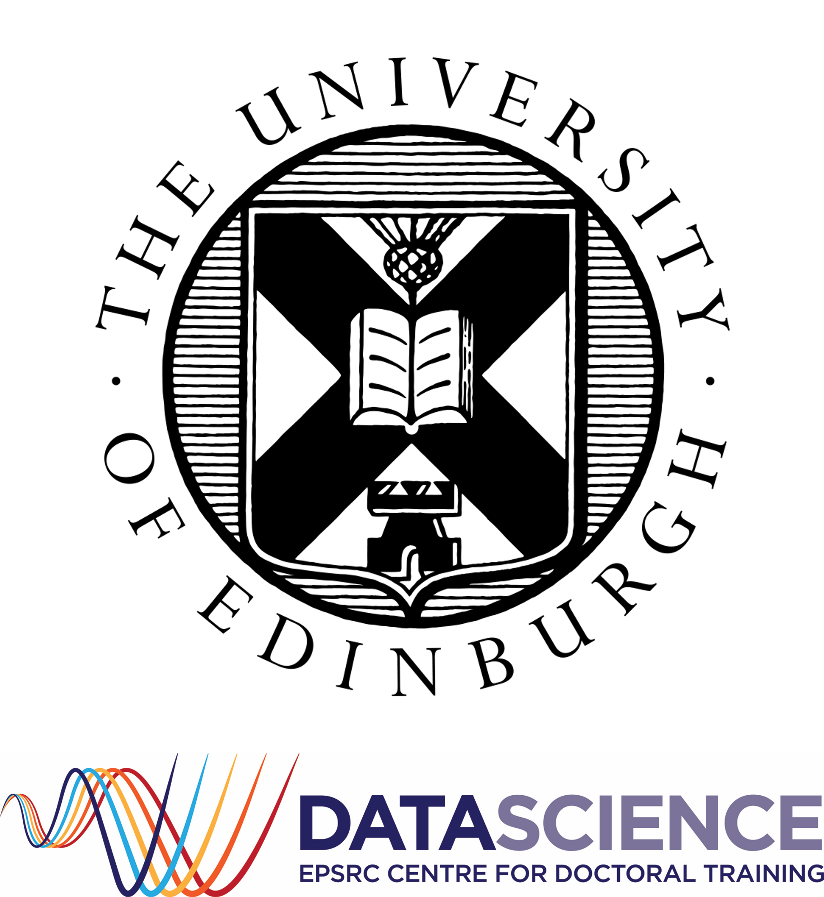

|
I'm a senior machine learning researcher at Samsung Research, where I focus on personalization of generative AI models. Before joining Samsung, I was a postdoctoral researcher at the University of Edinburgh, working on topics such as multimodal large language models, diffusion models, fairness, uncertainty calibration and out-of-distribution generalization. I did my PhD on Meta-Learning Algorithms and Applications at the University of Edinburgh, advised by Timothy Hospedales. I was a research intern at Samsung AI Center, Cambridge and Amazon Web Services, Berlin, and also did part of my studies at the Alan Turing Institute in London.Email / Google Scholar / Twitter / Github / LinkedIn / London, UK |

|
Experience |
Research |
|
Senior Researcher
Samsung Research, London (Staines-upon-Thames), UK May 2024 - Current Research in personalization of generative AI models Part of AI Research team led by Mete Ozay |
|
|
Postdoctoral Research Associate
The University of Edinburgh, Edinburgh, UK May 2023 - May 2024 Research in multimodal large language models, diffusion models, fairness, uncertainty calibration Supervised by Timothy Hospedales |
|
|
Research Intern (Part-Time)
Samsung AI Center, Cambridge, UK Nov 2021 - Apr 2022 Research in source-free domain adaptation Hosted by Da Li |
|
|
Enrichment Scheme PhD Student
Alan Turing Institute, London, UK Jan 2022 - Mar 2022 Enrichment scheme placement at the Alan Turing Institute Participated in an online Engage @ Turing scheme since 2020 |
|
|
Applied Scientist Intern
Amazon Web Services, Berlin, Germany Jul 2021 - Oct 2021 Research in hyperparameter optimization and neural architecture search Hosted by Giovanni Zappella |
Teaching |
|
Teaching Fellow
Cambridge Spark, UK Jul 2020 - Jun 2024 Content development, teaching and technical mentoring |
|
|
Teaching Support Provider
The University of Edinburgh, Edinburgh, UK Oct 2018 - May 2023 Introductory Applied Machine Learning: Tutor, lab demonstrator and marker Machine Learning Practical: Tutor and lab demonstrator |
Software Engineering |
|
Software Development Engineer Intern
Amazon, Edinburgh, UK Apr 2018 - Aug 2018 |
|
|
Technology Summer Analyst
JPMorgan Chase & Co., Glasgow, UK Jun 2017 - Aug 2017 |
|
|
Software Engineering Intern
Metaswitch, Edinburgh, UK May 2016 - Aug 2016 |
Education |
 |
PhD & MSc(R) in Data Science
The University of Edinburgh, Edinburgh, UK Sep 2018 - Feb 2024
|
|
BSc (Hons) Artificial Intelligence and Mathematics
The University of Edinburgh, Edinburgh, UK Sep 2015 - May 2018
|
|
|
International Baccalaureate Diploma Programme
Jur Hronec Grammar School, Bratislava, Slovakia Sep 2013 - May 2015
|
MiscI often competed and won prizes in various hackathons, including Algothon (quant finance hackathon), QuHackEd (quantum computing hackathon), Data Open (datathon organized by Citadel - I even participated in the Championship), Hack the Burgh and many others. An overview of some of the projects I worked on is available on my Devpost profile, and there are also articles about my teams here and here. During my high school I very successfully participated in many competitions in Mathematics, Physics and Informatics, in particular the subject Olympiads, correspondence seminars and various team competitions. Most notably I represented Slovakia at the Middle European Mathematical Olympiad in Dresden, Germany in 2014. |
|
Design and source code from Jon Barron's website |